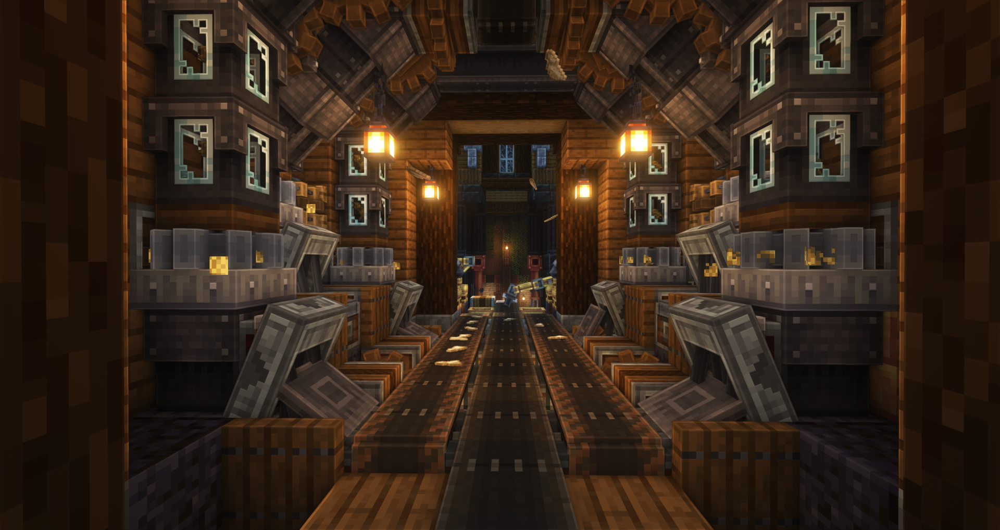
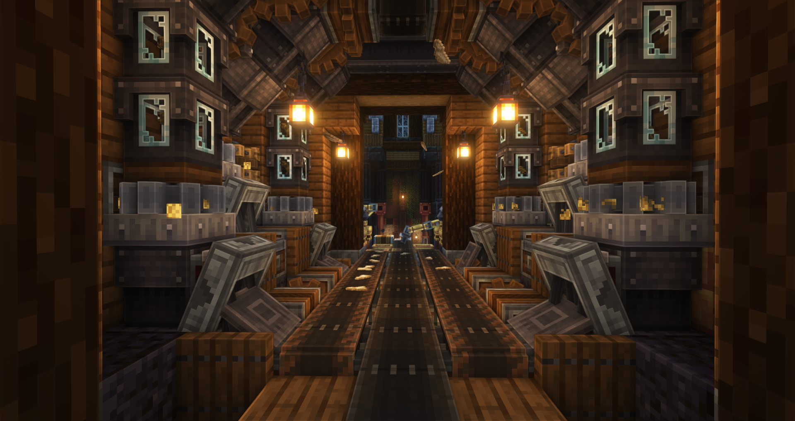

Incredible
Technicalities
This picture shows the capabilities of a steam engine, which is a late
game mechanism, allowing you to produce up to 294,912 SU in one machine.
Although this might seem overpowered, it is in fact not as there is a
lot of hard to get materials that need to be automated in order to keep
it running, such as blaze cakes.
Extensive
Reaches
This picture shows the far extents of Create Mod, as it even reaches far
and often untouched parts of automation such as the breeding or handling
of animals. In this case, the image shows a barn house with cows being
milked. The source of this image is the Create Mod Trailer World.
Infinite
Possibilities
This is a picture from the Create Mod Trailer World that shows a house
being lowered onto a platform of pipes and gears, showing the sheer
extent of the mod's capabilities, in corelation to the players
creativity. Almost anything can be done with create.
Amazing
Automation
This screenshot, once again from the trailer world, depicts a scene of
dough and seeds being sorted onto a conveyor belt, where they are then
moved away. This shows the amazing capabilities field of automation that
the mod offers, the same field that is the reason it is still alive and
thriving to this day.
Complete
Freedom
This is a screenshot form, once again, you guessed it, the Create Mod
Trailer World, and it shows the cake, the final product of the world
that all of my pictures are from. This shows that, no matter the goal of
create, you can accomplish that goal, and that is the beauty of the mod.